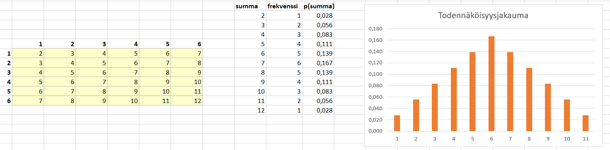
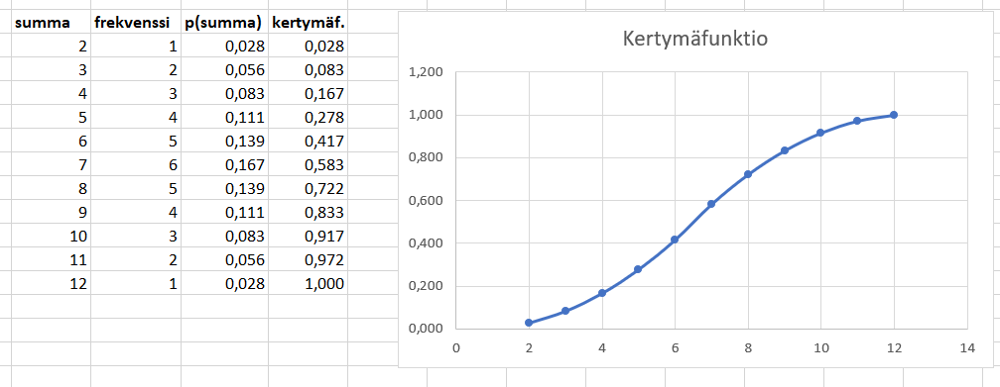

Diskreetti jakauma
Contents
\( \def\euro{\unicode{x20AC}} \)
Diskreetti jakauma¶
Diskreetti todennäköisyysjakauma on lista pareja, joissa on lueteltu kaikki mahdolliset satunnaismuuttujan arvot liitettynä vastaavaan todennäköisyyteen:
\(\left\{\left\{x_1,p_1 \right\}, \left\{x_2,p_2 \right\}, \ldots, \left\{x_n,p_n \right\} \right\}\)
Koska \(x_1,x_2, \ldots , x_n\) muodostavat satunnaisilmiön kaikki mahdolliset tulokset, pitää niiden todennäköisyyksien yhteenlaskettuna olla arvoltaan 1 tai prosentteina ilmaistuna 100 %. Matemaattisin merkinnöin tämä ilmaistaan
\(\sum_{i_1}^n p_i = 1\)
Tiheys- ja kertymäfunktio¶
Funktiota \(p(x)\), joka kertoo satunnaismuuttujan tietyn arvon \(x\) todennäköisyyden, kutsutaan todennäköisyysfunktioksi tai -jakaumaksi tai tiheysfunktioksi (PDF, probability density function).
Esim. Heitetään kahta noppaa. Merkitään \(x = \text{noppien silmälukujen summa}\).

Yllä vasemmalla keltaisessa ruudukossa on muuttujan \(x\) arvot, jotka saadaan kaikista mahdollisista nopanheiton tuloksista. Ylärivillä olevat luvut \(1, 2, \ldots , 6\) kuvaavat yhden nopan mahdollisia tuloksia, ja vasemmassa reunassa olevan luvut kuvaavat toisen nopan mahdollisia tuloksia. Taulukkoon on laskettu kaikki mahdolliset kahdella nopalla saatavat summat.
Keskellä taulukossa vastaavat todennäköisyydet \(p(x)\). Todennäköisyydet on saatu jakamalla suotuisien tapauksien määrä kaikkien mahdollisten kahden nopan silmälukujen summien määrällä. Esimerkiksi summan 8 todennäköisyys on 5/36, sillä luku 8 esiintyy keltaisessa taulukossa olevien 36 luvun joukossa 5 kertaa. Taulukko muodostaa tämän satunnaisilmiön todennäköisyysfunktion. Todennäköisyysfunktio \(p(x)\) on oikealla esitetty myös kuvaajan avulla.
Yllä olevasta taulukosta voidaan selvittää muutakin kuin se, mikä on tietyn noppien silmälukujen summan todennäköisyys. Voitaisiin esimerkiksi laskea todennäköisyys sille, että kahden nopan silmäluku on
pienempi kuin 10, tai
ainakin 5, tai
vähintään 4 mutta enintään 7.
Menetelmä ylläoleviin laskuihin on yksinkertainen: katsotaan vain, mitkä kaikki summat toteuttavat annetun ehdon, ja lasketaan niiden todennäköisyydet yhteen. Esimerkiksi todennäköisyys sille, että summa on vähintään 4 mutta enintään 7, on
\(P(4 \leq X \leq 7) = P(X=4)+P(X=5)+P(X=6)+P(X=7)\)
\(P(4 \leq X \leq 7) =\frac{3}{36}+\frac{4}{36}+\frac{5}{36}+\frac{6}{36}=\frac{18}{36}=50~\%\).
Yleisemmin äskeisen esimerkiksi kaltaisia laskutoimituksia tehdään niin sanotaan kertymäfunktion avulla. Kertymäfunktio (cumulative distribution funtion, CDF), jota merkitään \(F(x)\), laskee kumulatiivisen todennäköisyyden, eli todennäköisyyden sille, että muuttujan arvo on enintään jonkin verran. Matemaattisesti tätä todennäköisyyttä merkitään \(P(X \leq x_k)\). Kyseinen todennäköisyys on kertymäfunktion arvo kyseisellä muuttujan arvolla.
Matemaattinen merkintä tämän todennäköisyyden laskulle on
\(F(x_k )=P(X \leq x_k )=\sum_{i=1}^k p_i\).
Kertymäfunktion arvon suurimmalla mahdollisella muuttujan arvolla pitää olla tasan 1 tai 100 %, sillä varmasti jokainen muuttujan arvo on enintään yhtä suuri kuin kaikkein suurin muuttujan arvo.
Vaikka kertymäfunktio kuvaa todennäköisyyttä sille, että muuttujan arvo on enintään jotakin, voidaan sitä käyttää myös sen laskemiseen, että muuttujan arvo on enemmän kuin jotakin. Tällöin pitää käyttää komplementtiperiaatetta: jos luku on suurempi kuin 10, niin se ei ole pienempi tai yhtä suuri kuin 10.
Esim. Kahta noppaa heitettäessä silmälukujen summan kertymäfunktio on esitetty taulukossa ja kuvassa.

Todennäköisyys sille, että silmälukujen summa on korkeintaan 7, on
\(P(x\leq 7)=F(7)=\frac{21}{36}=58~\%\).
Todennäköisyys sille, että silmälukujen summa on enemmän kuin 9, on
\(P(x>9)=1-P(x \leq 9)=1-F(9)=1-\frac{30}{36}=\frac{6}{36}=17~\%\).
Odotusarvo¶
Yhtä tavallista noppaa heitettäessä jokainen tulos yhdestä kuuteen on yhtä todennäköinen. Jos noppaa heitettäisiin tuhansia kertoja peräjälkeen, tuloksen keskiarvo alkaisi lähestyä tiettyä lukua. Tätä lukua sanotaan odotusarvoksi. Yleisesti todennäköisyysjakauman odotusarvo \(\mu\) on satunnaismuuttujan eniten odotettavissa oleva arvo, eräänlainen keskiarvo. Se lasketaan seuraavasti:
\(\mu=\sum_{i=1}^n p_i x_i\)
Esim. Arpajaisissa todennäköisyys voittaa 2000 € on 0.01 ja arvan hinta on 15 €. Olkoon \(x_1\) arvalla voittamista vastaava rahasumma (voittosumma, josta on vähennetty arvan hinta), ja \(x_2\) rahasumma joka liittyy siihen että ei voita (tällöin menettää arvan hinnan).
Odotusarvo voittosummalle on \(0.01\cdot (2000 ~\euro-15 ~\euro)+0.99\cdot (-15~\euro)=5~\euro\).
Odotusarvon suuruista lukua ei välttämättä esiinny kertaakaan koko tapahtumien sarjassa. Esimerkiksi nopanheitossa odotusarvo on
\(\mu \frac{1}{6}\cdot 1+\frac{1}{6}\cdot 2+\frac{1}{6}\cdot 3+\frac{1}{6}\cdot 4+\frac{1}{6}\cdot 5+\frac{1}{6}\cdot 6\)
\(\mu =\frac{1}{6} (1+2+3+4+5+6)=\frac{1}{6}\cdot 21=\frac{21}{6}=3.5\).
Frekvenssijakaumassa muuttujan arvolle lasketaan todennäköisyys jakamalla kiinnostavien tapahtumien määrä \(f_k\) kaikkien tapahtumien määrällä:
\(p_k=\frac{f_k}{\sum_{i=1}^n f_i}\)
ja odotusarvo on sama kuin näillä todennäköisyyksillä painotettu keskiarvo.
Esim. Arpajaisissa on 2000 arpaa, joista 50:llä voittaa 10 €, kymmenellä voittaa 100 € ja yhdellä voittaa 300 €. Lopuilla ei voita mitään. Arvan hinta on 5 €. Mikä on voittosumman odotusarvo?
Ratkaisu
Merkitään voittojen todennäköisyyksiä \(p_1\) (10 €), \(p_2\) (20 €), \(p_3\) (300 €) ja \(p_4\) (0 €).
Eri voittojen todennäköisyydet ovat
\(p_1=\frac{50}{2000}=0.025\), \(p_2=\frac{10}{2000}=0.005\), \(p_3=\frac{1}{2000}=0.0005\), \(p_4=\frac{2000-50-10-1}{2000}=\frac{1939}{2000}=0.9695\)
Odotusarvo on
\(\mu = 0.025\cdot (10-5)~\euro+ 0.005\cdot (100-5)~\euro+ 0.0005\cdot (300-5)~\euro+0.9695\cdot (-5~\euro)\)
\(\mu =-4.1~\euro\)
Varianssi ja keskihajonta¶
Jakauman varianssi \(\sigma^2\) on havaintoarvojen hajonnan mitta, joka määritellään seuraavasti:
\(\sigma^2=\sum_{i=1}^n p_i (x_i-\mu)^2\)
Keskihajonta \(\sigma\) on varianssin neliöjuuri. Keskihajonnan käsitteeseen perehdytään tarkemmin tilastollisen luotettavuuden yhteydessä.
Esim. Heitetään kolmea noppaa. Muodosta todennäköisyysjakauma satunnaismuuttujalle \(X\), joka ilmoittaa kuutosten lukumäärän. Laske satunnaismuuttujan odotusarvo ja varianssi.
Ratkaisu
Satunnaismuuttujan X todennäköisyysjakauma on \(\left\{\left\{0,P(X=0)\right\},\left\{1,P(X=1)\right\},\left\{2,P(X=2)\right\},\left\{3,P(X=3)\right\}\right\}\)
Luvut 0, 1, 2 ja 3 vastaavat kuutosten mahdollisia lukumääriä, ja niiden perässä listalla ovat vastaavat todennäköisyydet. Lasketaan ensin näiden eri vaihtoehtojan todennäköisyydet:
Nolla kuutosta on tarkoittaa sitä, että jokaisella nopalla tulee jokin viidestä muusta luvusta, joten
\(P(X=0)=\frac{5}{6}\cdot \frac{5}{6} \cdot \frac{5}{6}=\frac{125}{216}\)
Yksi kuutonen voidaan saada joko ensimmäisellä, toisella tai kolmannella nopalla; muilla nopilla on tällöin saatava jokin viidestä muusta luvusta. Siis
\(P(X=1)=\frac{1}{6}\cdot \frac{5}{6}\cdot \frac{5}{6}+\frac{5}{6}\cdot \frac{1}{6}\cdot \frac{5}{6}+ \frac{5}{6}\cdot \frac{5}{6}\cdot \frac{1}{6}=\frac{25}{72}\)
Kolmen kuutosen heitossa täytyy jokaisella nopalla saada juuri yksi tulos kuudesta, siis
\(P(X=3)=\frac{1}{6}\cdot \frac{1}{6} \cdot \frac{1}{6}=\frac{1}{216}\)
Kahden kuutosen todennäköisyys on ainoa jäljellä oleva vaihtoehto. Koska kaikkien tulosten todennäköisyyksien pitää olla yhteensä 1, lasku on helpoin komplementtiperiaatteella:
\(P(X=2)=1-\frac{125}{216}-\frac{25}{72}-\frac{1}{216}=\frac{5}{72}\).
Todennäköisyysjakauma on siis \(\left\{\left\{0,\frac{125}{216}\right\},\left\{1,\frac{25}{72}\right\},\left\{2,\frac{5}{72}\right\},\left\{3,\frac{1}{216}\right\}\right\}\).
Odotusarvo:
\(\mu \sum_{i=1}^4 p_i x_i = 0\cdot \frac{215}{216}+1\cdot \frac{25}{72}+2\cdot \frac{5}{72}+3\cdot{1}{216}=0.5\)
Varianssi:
\(\sigma^2=\sum_{i=1}^4 p_i (x_i-\mu)^2\)
\(\sigma^2 = (0-0.5)^2 \cdot \frac{125}{216}+(1-0.5)^2\cdot \frac{25}{72}+(2-0.5)^2\cdot \frac{5}{72}+(3-0.5)^2\cdot \frac{1}{216}=\frac{5}{12}\).